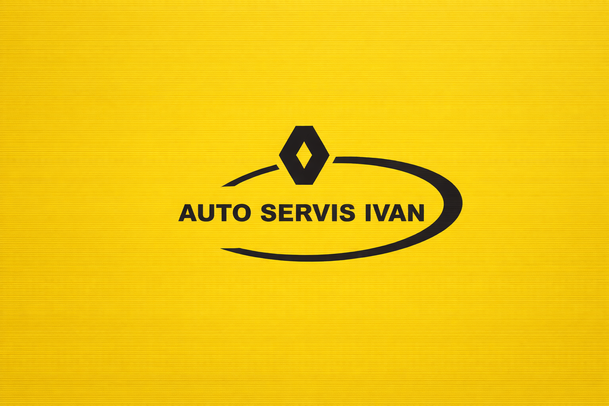
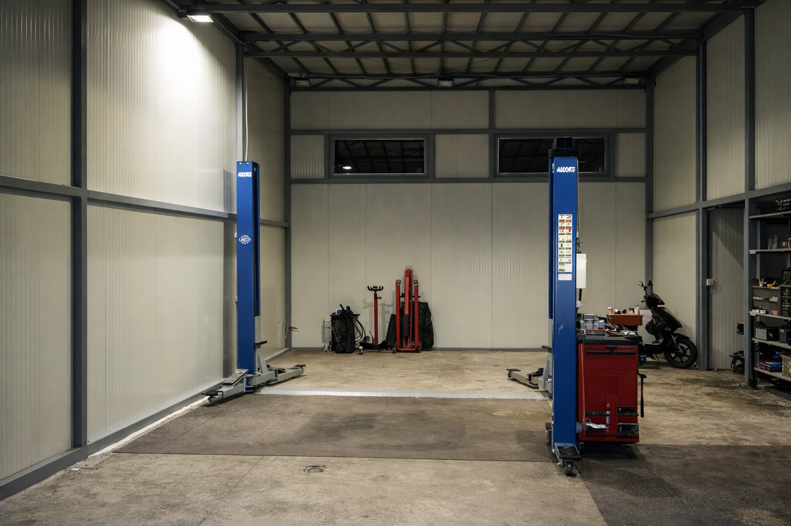
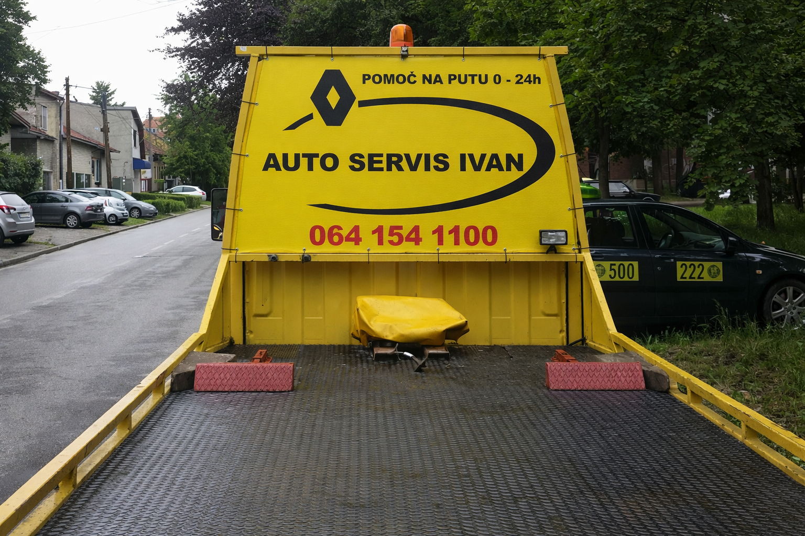

Auto servis Novi Sad
Servis Reno Ivan
Profesionalan i pouzdan auto servis u Novom Sadu. Jasna komunikacija, poštovanje dogovora i kvalitetno odrađen posao.
Lokacija
Stevana Mokranjca 5, Novi Sad
Radno vreme
Pon–Pet 08:00–17:00
Kontakt
064 154 1100
Galerija



O servisu
Auto servis koji gradi poverenje kroz jasan dogovor, korektan odnos i kvalitetno odrađen posao.
Servis Reno Ivan je auto servis iz Novog Sada poznat po korektnom odnosu prema klijentima, jasnom dogovoru i pouzdanom radu. Fokus je na tome da klijent zna šta se radi na vozilu, koliko košta i kada će posao biti završen. Bez nepotrebnih komplikacija, sa ozbiljnim pristupom i poštovanjem dogovora.
Usluge
Osnovne usluge koje klijenti najčešće traže kada žele siguran, brz i korektan servis.
Redovan servis
Zamena ulja, filtera i osnovni pregled vozila kako bi automobil bio siguran, pouzdan i spreman za svakodnevnu vožnju.
Dijagnostika
Precizno utvrđivanje kvara i jasan pregled problema pre početka rada, bez nagađanja i gubljenja vremena.
Mehanika i popravke
Različite mehaničke intervencije i popravke uz korektan dogovor, kvalitetan rad i pregledno objašnjenje šta je urađeno.
Zašto klijenti biraju nas
Ljudi se vraćaju servisu kada znaju da mogu da računaju na ozbiljnost, korektan odnos i jasan dogovor.
Profesionalan pristup
Ozbiljan odnos prema klijentu, vozilu i svakom dogovorenom poslu.
Poštovanje dogovora
Jasno definisan posao, rokovi i komunikacija bez razvlačenja.
Jasno objašnjenje
Klijent zna šta se radi, zašto se radi i šta može da očekuje.
Poverenje
Pouzdan rad i korektan odnos koji ostavljaju dobar utisak i sigurnost.
Šta kažu klijenti
Utisci koji najčešće ističu korektan odnos, pouzdan rad i poštovanje dogovora.
"Brz i pouzdan servis. Sve preporuke. Dogovor je bio jasan i posao završen kako treba."
– M. P."Korektan odnos i fer cena. Objašnjeno mi je šta treba da se uradi i sve je završeno bez komplikacija."
– D. S."Tačno na vreme i bez komplikacija. Danas je retko naći majstora koji radi odgovorno i pošteno."
– N. J.Treba vam pouzdan auto servis?
Kontaktirajte nas odmah i rešite problem bez stresa.
Kontakt
Telefon: 064 154 1100
Adresa: Stevana Mokranjca 5
Radno vreme: Pon–Pet 08–17h